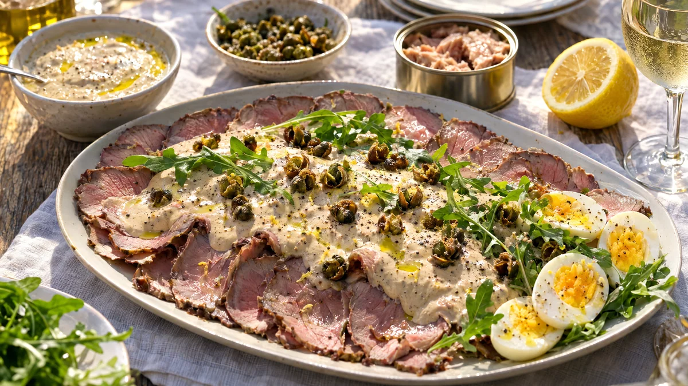

RESTFEST · RECEPTSåser & röror
Tonnatosås på burktonfisk med kapris och citron
En burk tonfisk, majonnäs, kapris och citron mixas till en sidenlen italiensk sås. Den ringlas över kall stek, kyckling, ägghalvor eller rostad potatis och toppas med krispigt stekt kapris. Klassisk vitello tonnato utan dyra råvaror.
- Förberedelse
- 10 min
- Tillagning
- 2 min
- Portioner
- ca 3 dl (4–6 portioner)
- Nivå
- Nybörjare
 Det här behöver du
Det här behöver du
Tryck på + vid det du behöver köpa.
Sås
Krispig kapris
Till servering
Gör så här
- Mixa tonfisk, majonnäs, kapris, sardeller, citronskal och citronsaft slätt med en stavmixer.
- Späd med vatten, en matsked i taget, tills såsen har konsistens som tjock grädde.
- Smaka av med svartpeppar. Salt behövs sällan, eftersom tonfisk, kapris och sardeller redan är salta.
- Ställ såsen i kylen i minst 30 minuter så att smakerna går ihop.
- Klappa kaprisen till den krispiga kaprisen torr med hushållspapper. Hetta upp olivoljan i en liten stekpanna och stek kaprisen i 1–2 minuter, tills knopparna öppnar sig som små blommor och blir krispiga. Låt rinna av på hushållspapper.
Dekoration och servering
- Lägg ut tunt skivad kall stek, kyckling eller ägghalvor omlott på ett stort, flatt fat.
- Ringla tonnatosåsen över i ett brett band, så att lite av köttet syns i kanterna.
- Strö över den krispiga kaprisen, ruccola och nymald svartpeppar, och ringla över några droppar olivolja.
- Servera resten av såsen i en skål som dipp till grönsaker.
- Såsen håller i 3 dagar i kylen.
Mått och ugnstemperaturer
Måtten är svenska (dl, msk, tsk, krm). Ugnstemperaturerna gäller vanlig ugn med över- och undervärme; med varmluft, sänk med 20 grader.